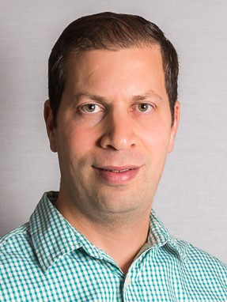

My Professor
My professor for global ethics is Gil Hersch. Dr. Hersch works in the philosophy department at Virginia Tech. Dr. Hersch received his undergraduate degree at the University of Jerusalem, Israel. Dr. Hersch continued on to receive his masters and doctorate degree from the University of California, San Diego. Dr. Hersch is involved in multiple professional activities, such as the Institute for Philosophy and Public Policy. Additionally, Dr. Hersch has published multiple academic articles throughout his career. He also received the Warren & Sylvia Samuels Young Scholar Award, History of Economic Thought Society in 2016. Dr. Hersch lives in Blacksburg with his wife and two children.
About the Course
I signed up for this course because global ethics fulfills an area two requirement. This class is one of the last general education requirements that I will have to take at Virginia Tech. Global ethics is also offered as an elective course for my minor, diversity and community engagement. Global Ethics focuses on the problems surrounding global poverty. Many times in class we talk about morals and obligations to the global poor, something I find very interesting. Global poor is a very important topic, and this class has made me more aware of my privileges. Our class attempts to answer ethical questions regarding what is not being done to help suffering people. Our class studies policies implemented around the world, and how some policies can have negative effects on the global poor. Some topics studied in global ethics include global warming, duties to humanity, free trade, normative ethics, and foreign aid.
Course Work
In global ethics, our grade mainly consists of weekly papers. Every week, we have a new topic. For example, if we are studying global warming we will eventually, have to write a paper. All papers must be 300-600 words about the topic. In addition to weekly papers, our class is assigned various academic readings every week. Students must read these academic papers prior to coming to class. Dr. Hersch combines the academic readings and weekly papers. The academic readings make writing the weekly papers more difficult because most of the articles are very long. Our job is to answer the prompt and topic within the word count. All of our papers are graded on a scale of 1 to 3. Global Ethics has also taught me to write a philosophy paper, something that I have never done before. Learning how to write philosophy papers has been a great experience, and I hope to apply those skills to my future academic career. The rest of our grade consists on participation and one group presentation after Thanksgiving break. While students are in class, Dr. Hersch lectures and students often talk in small groups to discuss various topics. I have really enjoyed global ethics because I have learned all about poverty. It has opened my eyes to how blessed my life is, and now I truly want to help others in need. Thank you, Dr. Hersch, for a great semester!
